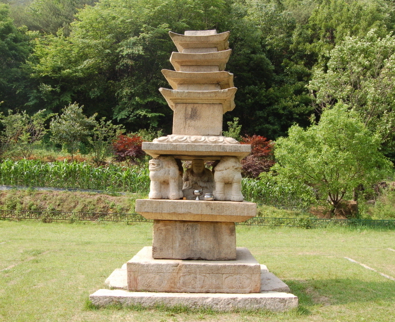

보물 제94호 제천 사자빈신사지 사사자 구층석탑

주요특징 및 설명
- 유형: 보물 제94호(1963년 지정)
- 분류: 유적건조물/ 종교신앙/ 불교/ 탑
- 위치: 충북 제천시 한수면 송계리 1002-1번지
- 시대: 고려시대 현종 13년(1022)
- 높이: 4.5m
- 주요 특징
사자빈신사지에 세워져 있는 고려시대 석탑이다. 기단부에 네 마리의 사자를 원각(圓刻)하여 배치했고, 사사자의 안쪽 공간에는 비로자나불상을 모셔 두었다. 현재 탑신에는 지붕돌이 4층까지 남아 있는데, 하층기단에 있는 명문을 통해 원래는 9층 석탑이었음이 확인되었다. 또한, 침입해오는 거란족을 불력(佛力)으로 막아 태평안민을 기원하려 한 시대적 상황도 엿볼 수 있다. 연대가 확실하여 다른 석탑의 조성연대를 추정하는데 기준이 되는 중요한 석탑이다.